featured project
Metior
A modern notes and knowledge workspace, evolved from the earlier ONION project. The current identity, interface and screens are shown below.
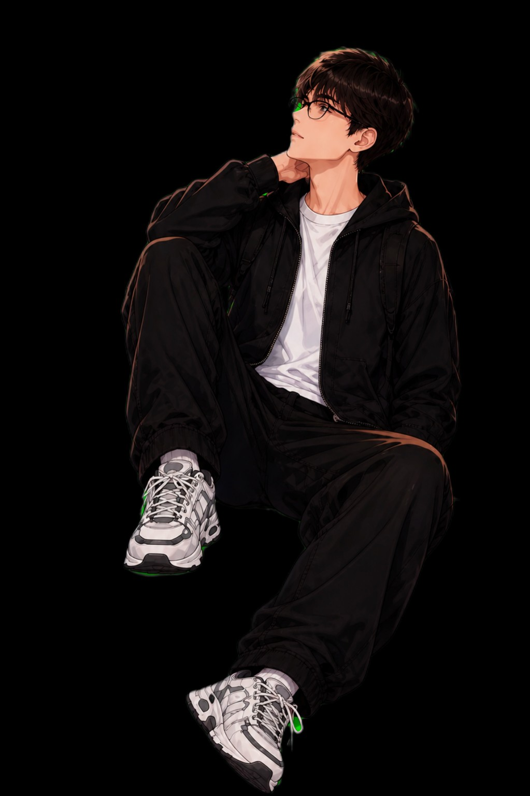
I design and build digital products with a focus on mobile experiences, clean interfaces and details that make software feel finished.
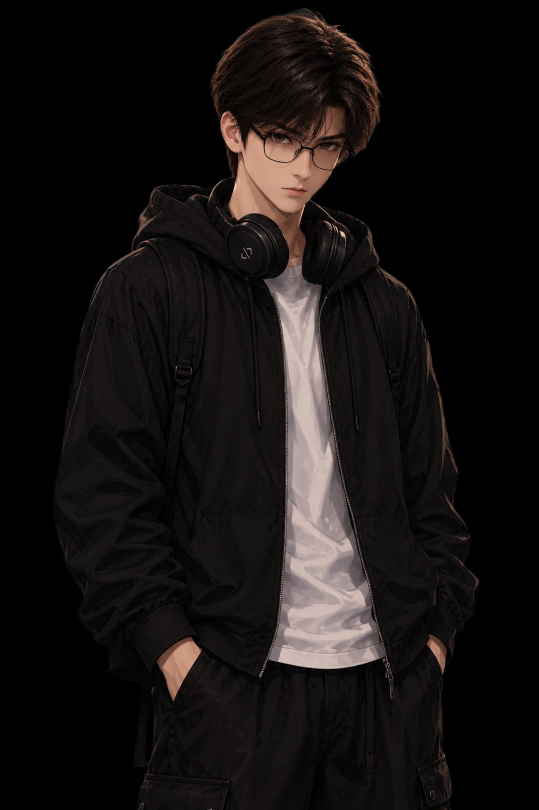
A compact look at products and developer tools I have been designing and building.
A modern notes and knowledge workspace, evolved from the earlier ONION project. The current identity, interface and screens are shown below.

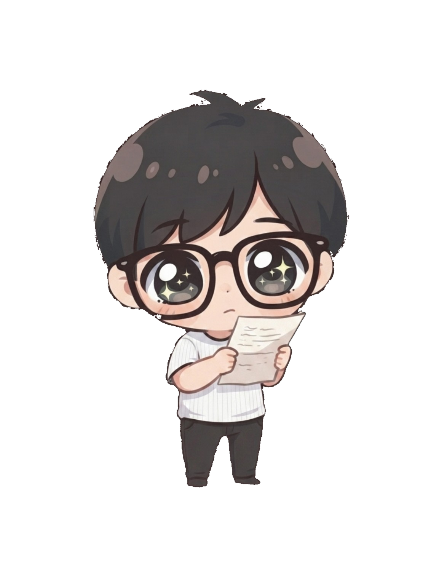
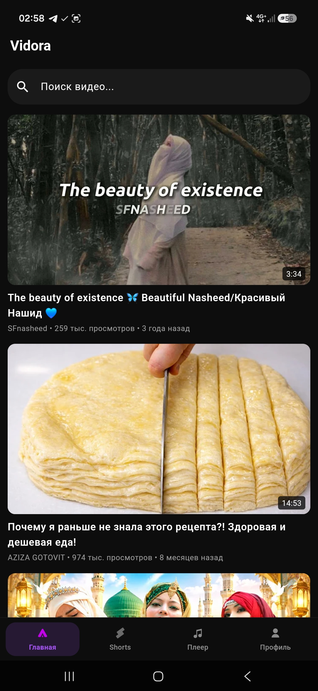
An alternative video client focused on a clean viewing experience, background playback and a native-feeling mobile interface.
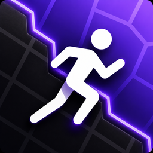
A location-based game concept where players capture zones, move around the city and compete through territory.
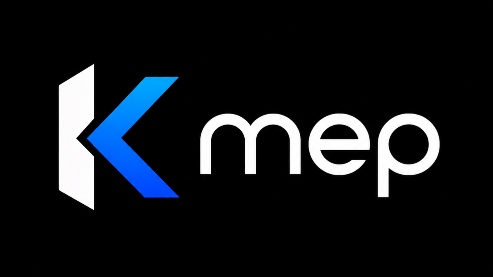
A library / engine project presented as a focused alternative to the existing NewPipe-oriented extraction ecosystem.
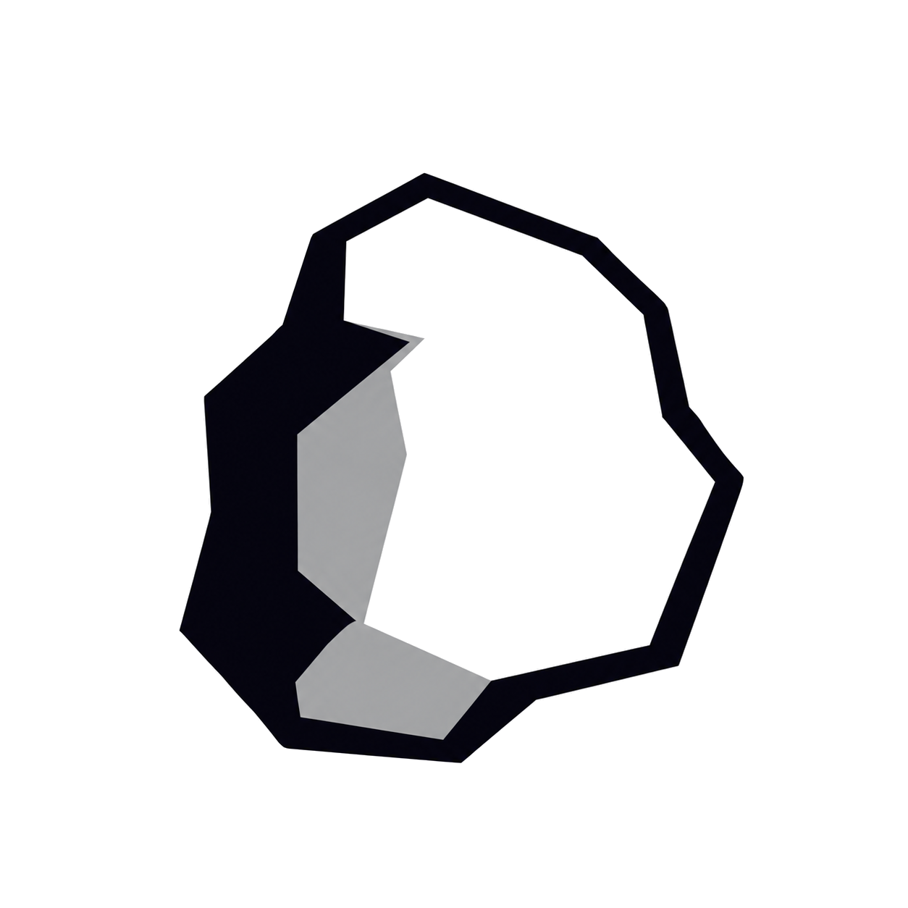
The renamed and redesigned successor to ONION — a note and knowledge product with a new visual identity and updated screens.
Less noise, more shipped work. I like taking an idea from rough concept to something that can actually be opened, tested and improved.
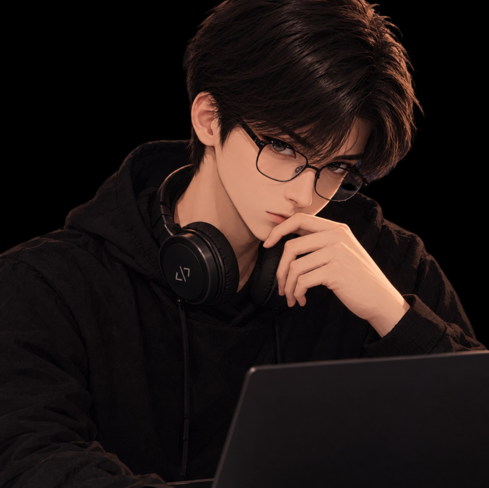
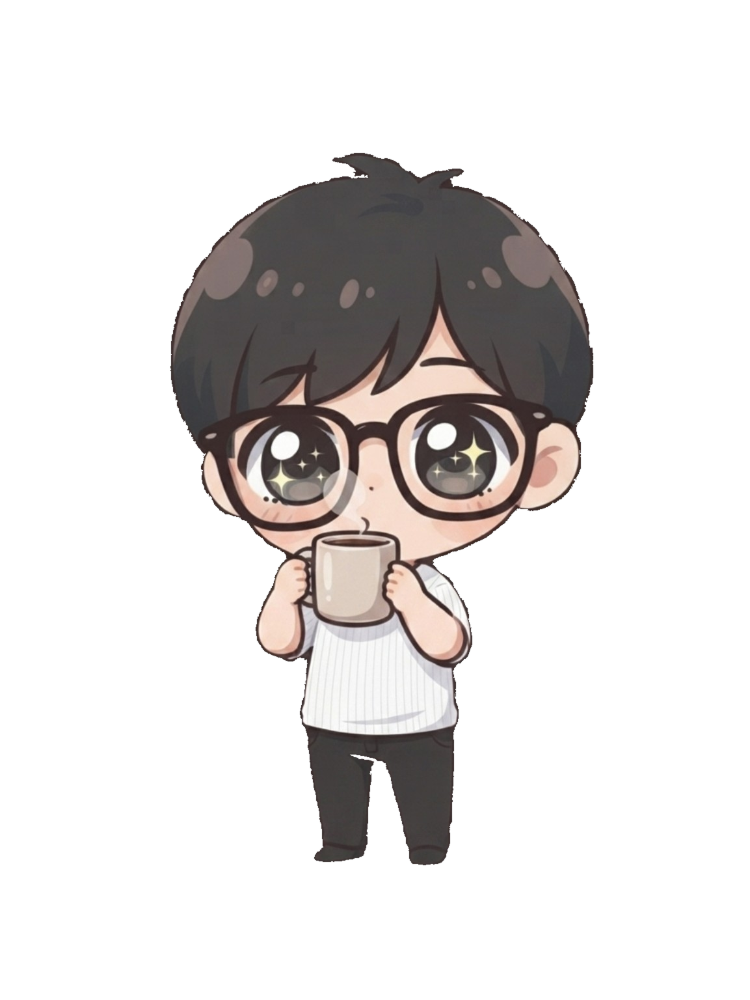
I care about the whole product: interface, architecture, performance and the small interactions people notice. The goal is not to fill a portfolio with experiments — it is to keep a small set of projects moving forward and make each version better.
Selected interface screens from the current project archive. Swipe on mobile.
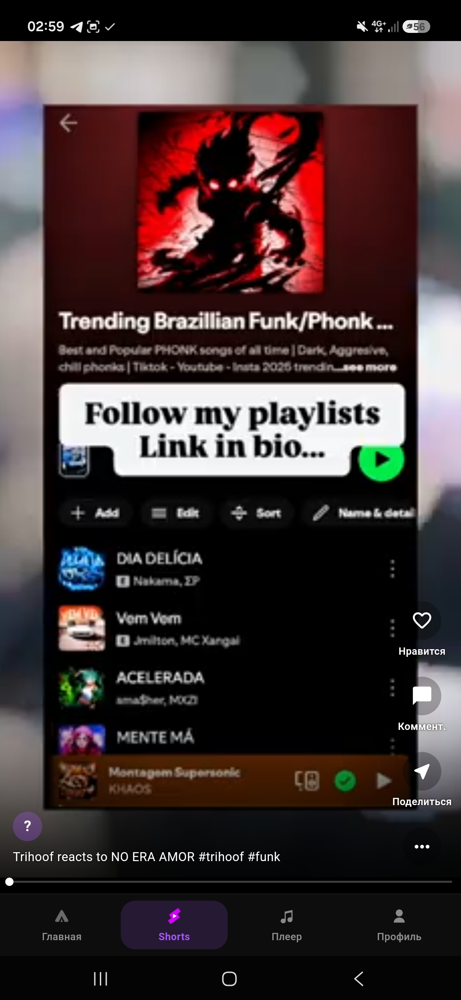
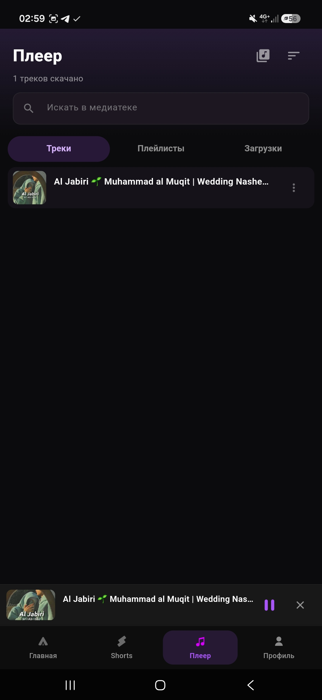
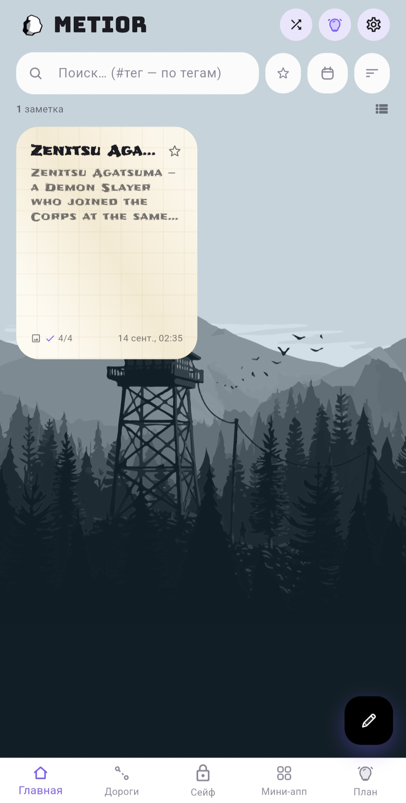
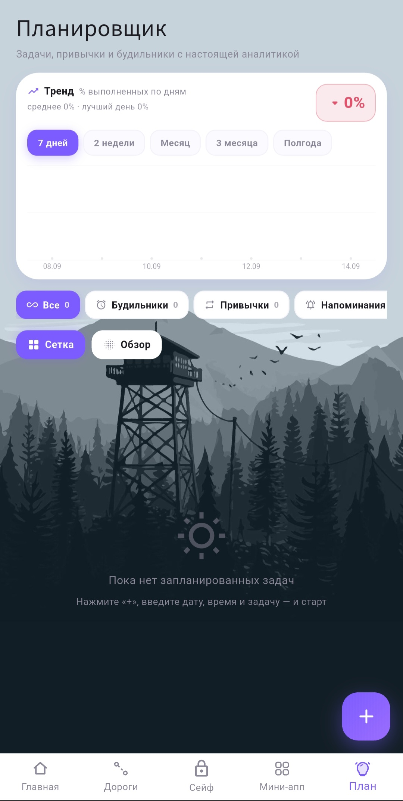
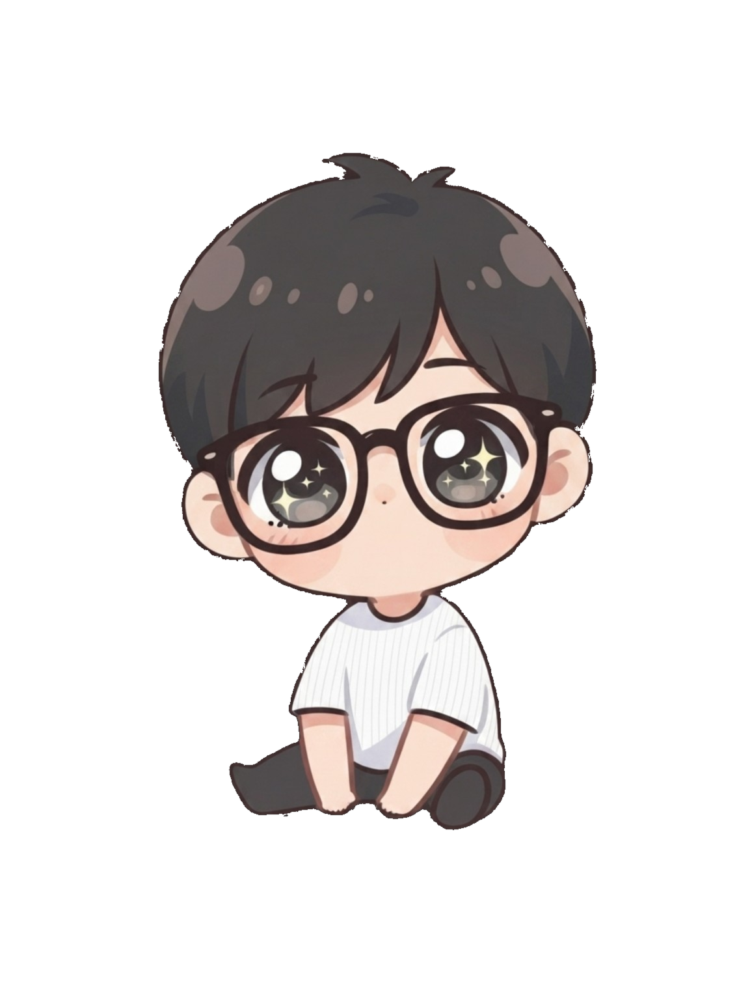
The fastest way to reach me is Telegram. You can also find the work and code through the links.